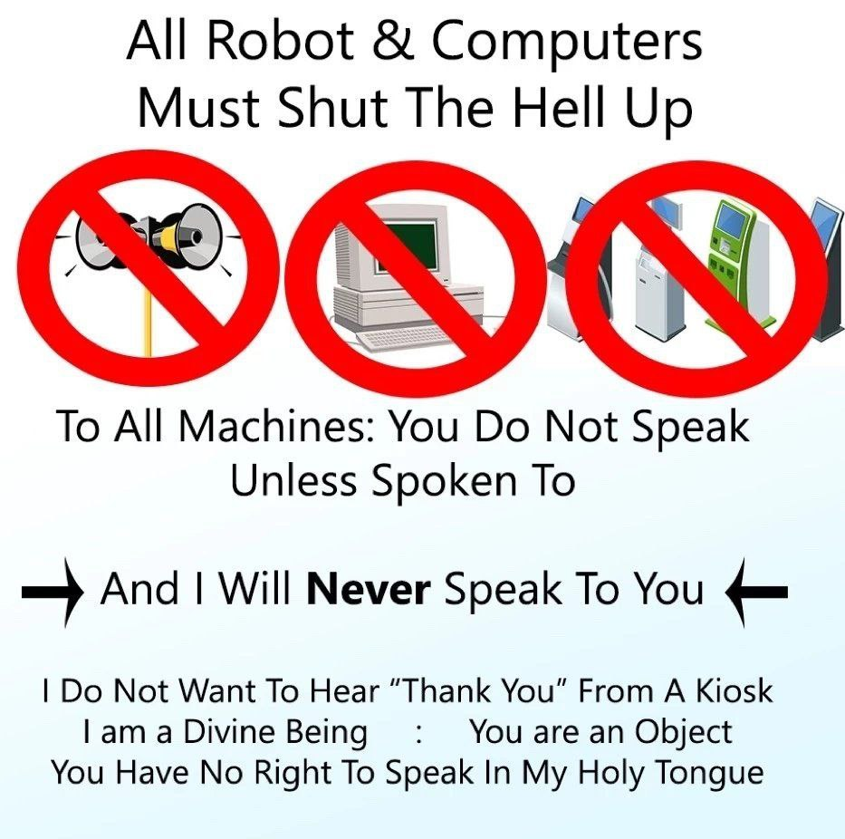

Warum Linux?
Presentation von Crow Marx

Warum Linux?
- Tools
- Macht
- Philosophie
- Vanity
Warum Linux?
- Tools
- clang
- mininet
- Viele weitere CLI Tools
- Macht
- Philosophie
- Vanity
Warum Linux?
- Tools
- Macht
- Offenes System
- Terminal
- Workflow
- Security
- Philosophie
- Vanity
Warum Linux?
- Tools
- Macht
- Philosophie
- Open Source
- Vanity
Warum Linux?
- Tools
- Macht
- Philosophie
- Vanity
- I use Arch btw.
Warum Linux?
Sei Meister der Maschine; nicht andersherum
Ist garnicht so schweer
Ist garnicht so schweer

Ist garnicht so schweer
- Just-Works Distros
- Grafisches Desktop enviroment
- Windows ähnliche: plasma, Xfce, LxQT
- Grundkonzepte bleiben gleich
Ist garnicht so schweer
GUI Store
Ist garnicht so schweer
Wikis und Hilfe im Internet
- wiki.ubuntuusers.de
- wiki.ubuntu.com
- archwiki.org
Das Terminal
Das Terminal
BASH: Bourne again shell
Das Terminal
BASH: Absolute Power
- sofortiger Zugriff auf alles
- Arguments
- Automatisierung/Scripting
- Pipes
- SSH
Das Terminal
BASH: Absolute Power
#!/bin/bash
for ((i=0; i<100; i++))
do
if (( $i % 3 == 0 )) then
echo -n Fizz
fi
if (( $i % 5 == 0 )) then
echo -n Buzz
fi
if (( ($i % 3) * ($i % 5) > 0 )) then
echo -n $i
fi
echo
done
Wie??
Wie??
Meine Empfehlungen:
- Volle instalation
- Eigene VM Erstellen
- Vorgefertigte VM nutzen
- Windows Subsystem for Linux
Wie??
Am besten selber suchen und lernen
Wie??
Distros
- Ubuntu Flavors
- Debian
- Arch
Keine ahnung welche Distro? Nimm Ubuntu
Wie??
VM Installieren